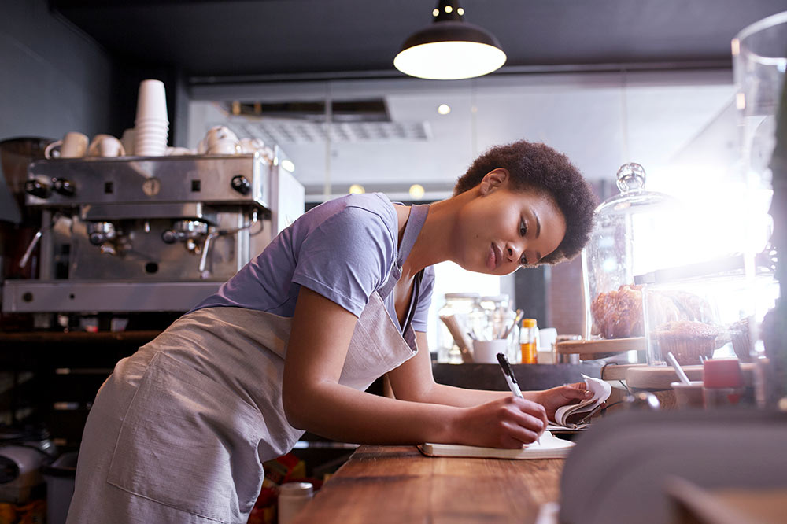

När doften av nybakat tog plats i staden
Berättelsen bakom Kafé Solglimt: "Allt började i ett litet kök i utkanten av Göteborg, där grundaren Sofia experimenterade med surdegar och lokalodlade bär. Drömmen var enkel: att skapa en mötesplats mitt i city som kändes precis lika trygg som mormors köksbord. År 2018 slog vi upp dörrarna till lokalen på Blåbärs Gatan 15. Med återbrukade möbler, en gammal espressomaskin och en stor portion passion förvandlade vi den råa lokalen till den varma oas den är idag. Namnet 'Solglimt' kom till oss en gråmulen novemberdag när solen plötsligt bröt igenom molnen och lyste upp våra fönster – precis den känslan av hopp och värme vill vi ge varje gäst som kliver in."
Mer än bara en kopp kaffe
Vår filosofi: På Kafé Solglimt tror vi på kraften i det småskaliga. Vår vision är att driva ett kafé där njutning och ansvar går hand i hand. För oss innebär det:
- Lokalproducerat i fokus: Vi handlar vårt mjöl från lokala kvarnar och våra grönsaker efter säsong.
- En plats för alla: Genom att erbjuda ett brett och genuint utbud av veganska och glutenfria alternativ ser vi till att ingen lämnas utanför fikagemenskapen.
- Hållbar framtid: Vi arbetar aktivt med att minimera matsvinn och plastanvändning, så att din fika gör gott för både själen och planeten.
Sofia – Grundare & Kreativ ledare
- Det är Sofia som står bakom recepten och den övergripande visionen. Hon syns oftast i bageriet med mjöl på förklädet.
- Favorit på menyn: "Vår signaturbulle med kardemumma och brynt smör – den slår aldrig fel."

Lukas – Chefbarista & Kaffekonstnär
- Lukas ser till att varje bönas fulla potential når din kopp. Han har en passion för latte art och svarar mer än gärna på frågor om olika rostningar.
- Favorit på menyn: "En enkel, fyllig espresso gjord på våra säsongsbönor från Etiopien."

Emma – Serviceansvarig & Alltiallo
- Emma är oftast det första ansiktet du möter. Med ett stort leende och ett öga för detaljer ser hon till att atmosfären alltid är välkomnande och att blommorna på borden är färska.
- Favorit på menyn: "Vår veganska Raw-tårta med hallon och citron – frisk, söt och helt fantastisk." 